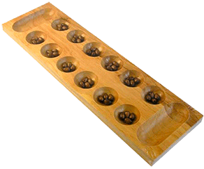
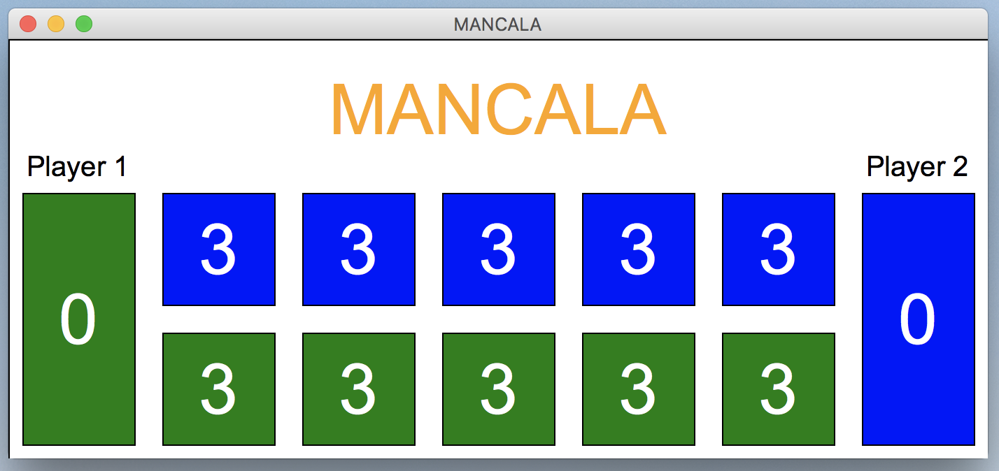
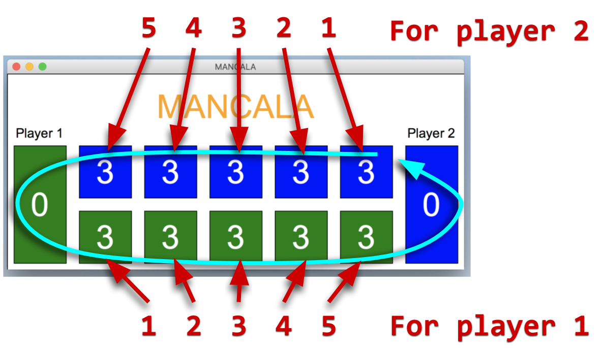

Ever seen a game board like this one? This is one variant of a Mancala board. According to the Mancala Wikipedia page, “Mancala is one of the oldest games played.” The game’s origins have been traced back to eastern Africa around the 6th century AD. In this PA, you will be implementing a variant of a Mancala game.
Like I mentioned earlier, Mancala is actually a family of games, not a specific one. The Wikipedia page lists some of the games within this family, but not all versions of the game have the same rules. Generally, the variants of the game have a similar board and rules that resemble others.
For our Mancala variant, we will use the board and rules described in this section.
Mancala is played on a mancala board. The board is arranged like so:
The game is played as follows:
This interface for this program will be a combination of graphical (with the graphics module) and command-line.
You will use graphics to display the board and the location of all of the chips.
You will use the command-line to prompt the user for their move.
When the game begins, the graphical component should look like this:

The canvas should be 700 pixels wide and 300 pixels tall. You should display all of the same components that this screen-shot shows, such as the game label, holes, mancala stores, player labels, and chip counts. The numbers in each of the holes and mancala stores represents the number of chips in them.
While this is displaying, the program will prompt the first player (player 1) for their move like so:
Player 1: Enter position to start moving chips at:
The program should continue to ask player 1 and player two for their moves until the game is over. An example will be shown later in this spec. Each player should enter a number between 1 and 5. If the player does not enter a valid input, the program will continue to ask the same player until a valid number is entered. The numbers 1-5 correspond to the various holes for each player, as shown in the diagram below. Also, the light-blue arrow represents the direction of play (counter-clockwise).

Below is a video showing an example of a game-play sequence. This shows a sequence of turns that leads to player 1 wining. You can use this as a check to ensure that your version of the program is working. You can pause the video at various points if you need to. NOTE: In the videos, the input is typed on the same line as the prompt. In your program, it should be read in on the next line.
Notice how the chip counts update based on each move of that is entered into the command-line.
Below is another video showing another sequence of turns that leads to player 2 winning.
You should study the video closely, and pause if you need to, and make sure you understand what happens (and why) for each move that is made).
I recommend that you tackle this program with the following steps:
mancala.py file.
Also, download graphics.py from the class website and put it in the same directory.
Finally, import the module as we talked about in class.graphics module, too.You must use lists to represent the pits.
You may not use the exit function.
This PA is due Friday, October 12, at 5:00pm. Turn in the program via Gradescope. You should try your best to get all of the test cases passing.